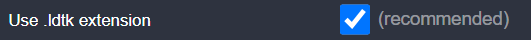
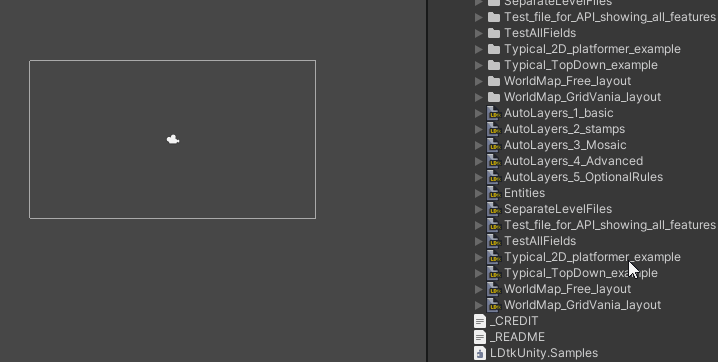
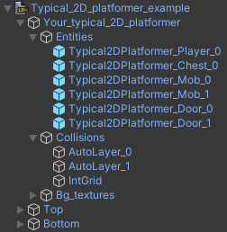

Project Importer
Store the LDtk project file in the Unity project so that it can be imported.
The file format must be .ldtk.

Simply drag-and-drop this main asset into the scene.

Inspector
The importer inspector is composed of several sections:
Main,
IntGrids,
Entities,
and Enums.

- After making any changes, click the apply button at the bottom to reimport.
- If any section is hidden, it's because there were no associated definitions in the LDtk project.
Hierarchy
The imported project generates a hierarchy of GameObjects:
- Project Root
- Levels
- Layers
- Entity/Tilemap GameObjects
- Layers
- Levels

Sub-Assets
In addition to the generated GameObjects, some other sub-assets are also generated:
- Artifact Asset
- Json Project
- Sprites
- The sprites are used in Auto-Layers and Tile-Layers, also can be referenced for any needs.

Reimport
- If there are any issues in the import process, try reimporting.
If there are still problems, post an issue on GitHub.